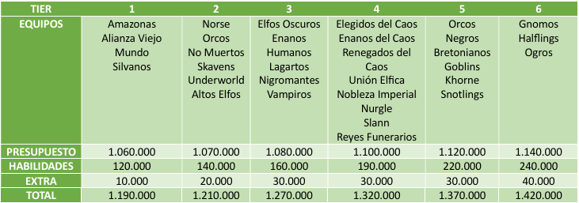
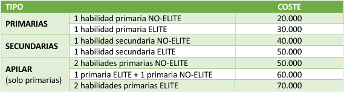
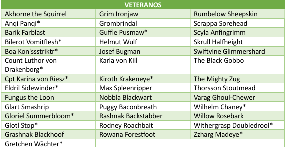
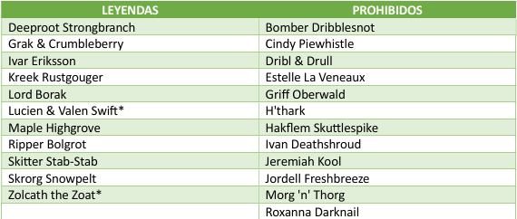

FORMATO
Toreno suizo por parejas a cuatro rondas sin final, en modo resurrección. La idea de la competición es que todos cojamos rodaje en partidos de tablero, divertirnos y tirar dados.
REGLAMENTO
Se usará el reglamento de tercera temporada así como las FAQ’s, erratas y demás documentos que publique Games Workshop antes del inicio del torneo. Todo lo que se publique pasado el inicio del torneo, no será de aplicación.
FECHAS
- Ronda 1 – 6 al 26 abril
- Ronda 2 - 27 abril al 17 mayo
- Ronda 3 - 18 mayo al 7 junio
- Ronda 4 - 8 al 28 junio
Una vez terminado el plazo, los partidos quedarán como están si se han iniciado, o empate a cero si no se ha iniciado.
CREACIÓN DE LAS PAREJAS, LOS EQUIPOS Y TIERS
Parejas
Las parejas estarán formadas por un jugador novato y un jugador veterano. Se considerará veterano a cualquier jugador con al menos una participación en una competición organizada (Liga Rayo de Luna, Numantian Bowl o cualquier otro torneo), siendo novatos todos aquellos que sea su primera competición. En caso de no ser mitad y mitad, quedará a criterio de los comisarios de la liga si un jugador es novato o veterano. El jugador veterano será el encargado de formar a su novato en el noble arte del Blood Bowl. Ayudarle en la creación del equipo, aconsejarle durante los partidos, enseñarle dónde y cómo pisar… Las dos primeras jornadas se enfrentarán Novato vs Veterano. La tercera y la cuarta Novato vs Novato y Veterano vs Veterano.
Equipos
Cada equipo recibirá una cantidad de dinero para la creación del equipo (jugadores, médico, reroll, incentivos…) y otra cantidad para habilidades. Dependiendo del tier de tu equipo, tendrás unos “Extra” que podrá usarse para la creación del equipo y para las habilidades. Ejemplo: El equipo enano tiene un presupuesto de 1.080.000 monedas de oro para la creación del equipo y 160.000 para habilidades. Sus fondos extra son de 30.000 monedas, lo que quiere decir que pueden crear el equipo por hasta 1.110.000, subir habilidades hasta 190.000, o repartirlo entre ambos. El total del equipo tiene que ser de 1.270.000.
Tiers

Incentivos
Todos los incentivos del reglamento están permitidos, excepto mercenarios y magos. Plegarias a Nuffle se limitan a 1 por equipo.
Subidas de habilidades
Las subidas de habilidades tendrán un coste de acuerdo con la siguiente tabla:

Jugadores estrella
Sólo los equipos en los Tiers 5 y 6 podrán contratar jugadores estrella, siendo imprescindible
tener un mínimo de 11 alineados antes de contratar al Estrella.
Los equipos con jugador estrella no podrán apilar habilidades ni elegir habilidades secundarias
en sus jugadores.
Se separa entre jugadores Veteranos y Leyendas.
Los equipos de Tier 5 podrán contratar uno o dos veteranos o una leyenda (nunca un veterano
y una leyenda). Contratar un veterano resta 50.000 al presupuesto de habilidades, mientras
que las leyendas restan 100.000
Los equipos de Tier 6 podrán contratar uno o dos veteranos o una leyenda (nunca un veterano
y una leyenda). Contratar un veterano resta 40.000 al presupuesto de habilidades cada uno,
mientras que las leyendas restan 80.000.


PUNTUACIÓN Y CLASIFICACIÓN
- Victoria: 3 puntos
- Empate: 1 punto
- Derrota: 0 puntos
- Concesión: -3 puntos
Se realizará una clasificación por parejas y una individual.
Criterios de desempate
- 1. Puntuación individual
- 2. Enfrentamiento directo.
- 3. TD Netos.
- 4. Bajas Netas.